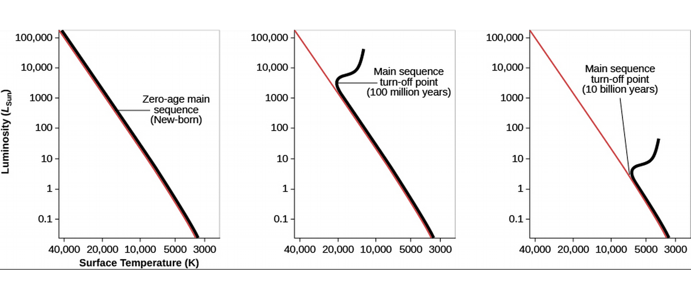
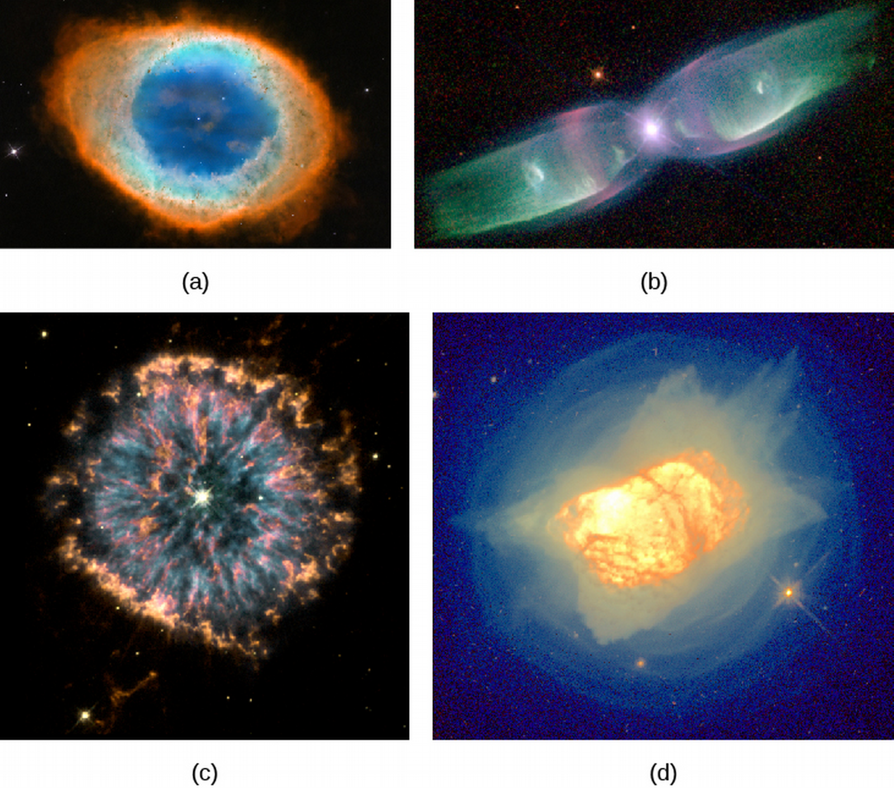
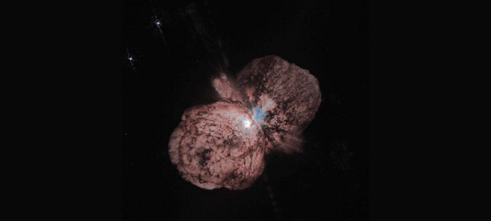

ASTR101 Ch 21-23
Ch 21 - The Birth of Stars and the Discovery of Planets Outside the Solar System
Star Formation
- We've discussed stars as nuclear furnaces that activate if they reach 10-12 million K with the pp-chain, but how do they come to this point?
- It's estimated that on average, three stars are formed per year in our Galaxy.
Quick Review
- Stars are defined by their ability to sustain nuclear fusion.
- Stable (main-sequence) stars like the Sun maintain equilibrium through nuclear fusion in their stars.
- Each second, 600 million tons of hydrogen fuse to helium in the Sun, releasing 4 million tons of matter as energy. This means all stars will eventually run out of fuel.
- Stars range from about 1/12 Mo to 200 MSun, with smaller stars being more prevalent.
- Along the main sequence, the higher the mass, the higher the luminosity.
- A galaxy of stars like the Milky Way contains enough gas and dust to make billions of Sun-like stars.
Molecular Clouds: Stellar Nurseries
- To study star birth, we have to look for dense, cold clouds.
- Giant molecular clouds are massive reservoirs of interstellar matter, with temperatures 10-20 K and most atoms bound in molecules. Most stars are born of giant molecular clouds.
- Clouds contain cold, dense regions called clumps. Clumps in turn somtimes contain denser, smaller regions, called cores, which are star embryos!
- Remember that a star's life revolves around two forces, gravity and pressure—gravity condenses everything inward, and pressure resists by pushing out.
- The higher the temperature, the higher the pressure. So low-temperature clouds and cores are ideal for gravity to take over, which is good, because…
- To sustain fusion, we need to increase the density of interstellar atoms by 1020.
The Orion Molecular Cloud
- Orion constellation contains molecular cloud, seen through infrared and radio emissions.
- It is a present source of active star formation.

- Orion's belt ~5 million years old, middle of sword contains Orion Nebula, 300,000 to 1 million years old, where stars still form today.
- The nebula contains a bright cluster of stars called the Trapezium.

Figure 2: (a) visible and (b) IR images of Orion Nebula show the Trapezium.
- Only about 1% of the dust in has converted to stars, the rest will probably be heated and blown away by stellar winds and explosions.
- This is why older star clusters are easier to seen the visible range; the dust has been pushed away.
Triggered Star Formation
- Once star clusters mature, they can help create more clusters, which is how the stars of Orion are theorized to have come about. This process is referred to as triggered star formation.
- A massive star emits UV and high-speed gas (stellar wind) when formed.
- This heats up the gas around it and causes it to expand.
- Dying stars explode, further heating the gas.
- Hot gases pile into the surrounding cold cloud, increasing its density.
- If density is sufficiently increased, gravity takes over, stars begin to form.
- This process can't take place if only low-mass stars are produced in the cloud, as are in many clouds.

Figure 3: Triggered star formation
The Birth of a Star
- The step between dust compressing and the youngest star is difficult to observe, because (1) it's very short (thousands of years, making it sparse), and (2) it's literally as dusty as you can get without being a star, so that it absorbs a lot of visible light.
- Still, a combination of limited observations and theoretical calculations yield the following.
- A dense, cold core is formed.
- The gravitational force of infalling gas overwhelms the (relatively low) internal pressure.
- A rapid collapse ensues, increasing many-fold the core density. Between this core contraction and the beginning of pp-fusion, the object is called a protostar.
- By conservation of angular momentum, the protostar spins faster and faster as it contracts, so that objects along the poles (which don't move much) collapse inward, but objects along the equator don't quite collapse.
- The protostar, having reached its final mass, becomes a T Tauri star.
- Only stars with mass ≤MSun become T Tauri stars.

Figure 4: Orange lines are stellar wind.
Winds and Jets
- T Tauri may be a middle stage between protostar and hydrogen-fusing stars like the Sun, according to recent observations.
- T Tauri release stellar winds, mainly protons and electrons streaming at several hundred thousand mph.
- Sometimes light is emitted from a denser lump of gas that the stellar wind stream collides with, exciting its atoms and emitting light. This light-emitting gas portion is known as a Herbig-Haro (HH) object after its discoverers.
- The stellar wind pushes out the surrounding dust and gas until the disk and protostar are visible.
- The dust enveloping the birthing star is so dense that the streams are visible, but no the star itself!

The H-R Diagram and the Study of Stellar Evolution
Evolutionary Tracks
- We can graphically describe the evolution of a star by tracing its characteristics in an H-R diagram!
- Let's start with a protostar, which is initially cool with a very large radius and low density. Heat can radiate out of the star easily at this low-density stage, meaning gravity is much stronger than internal pressure.
- Thus the star very quickly shrinks, decreasing its surface area and therefore luminosity (downward on H-R diagram).
- It keeps shrinking until internal temperature is strong enough to counter gravitational contraction, increasing its temperature in the process (leftward on H-R diagram).
- Note the timescales, and that more massive stars go through all stages of evolution faster.

Figure 6: Numbers are years of age, stars above dashed line are still enveloped by infalling material.
- When the star's inner temperature is high enough to fuse hydrogen to helium, we say the star has reached the main sequence.
- Stars on the main sequence are much more stable, changing very slowly with the depletion of hydrogen, the star's life fuel.
- Where the star falls on the main sequence depends on its mass; the higher the mass, the higher the temperature and luminosity.
- If the mass is too low (less than the critical mass of 0.075 Mo), temperatures for nuclear reaction are never achieved; these become brown dwarfs or planets.
- On the other hand, if the mass is too high (100-200 Mo), the internal pressure halts the accretion of additional matter.
Exoplanets Everywhere: What We Are Learning
Kepler Results

Figure 7: Kepler Discoveries

Figure 8: Actual Abundances
Planets with known density
- We can compare planet radius and density to get additional information about percentage of materials in the planet.
- Note as mass increases, radius increases, until there is so much mass that it causes gravitational contraction.

Figure 9: Blue are if planets had pure compositions
Exoplanetary Systems
- Other planetary systems than the solar system (exoplanetary systems) do happen, and likely also with multiple planets. Over 3000 such systems have been observed. One such exoplanetary system is Kepler-62.

Figure 10: Artist's conception. Habitable zones have calculated temperatures 0-100°C which supports liquid water.
Ch 22 - Stars from Adolescence to Old Age
Evolution from the Main Sequence to Red Giants
- We've traced stellar evolution up to the main sequence.
- The main sequence is where the star sustains itself through fusion.
- It's referred to as the prolonged adolescence or adulthood stage of the star's life cycle.
- Left edge of main sequence below is referred to as the zero-age main sequence, where stars first fuse hydrogen and settle in to the main sequence.

- While on main sequence, mass doesn't change much (only .7% of mass is converted to energy in fusion) but chemical composition goes from mostly Hydrogen to more and more Helium.
- This change in composition changes the star's temperature, luminosity, size, and interior structure.
- This moves it along the H-R diagram! How?
- As H converts to He through the nuclear pp-chain, the inner density increases, increasing temperature, giving protons more speed on average, resulting in more collisions, and a much higher rate of fusion.
- The rate of fusion of the pp-cycle increases with temperature as
\[\mbox{Rate of pp-fusion}\propto{}T^4.\]
- So temperature increases, and luminosity will increase due to the increased rate of fusion (which produces increased rate of energy).
- This means up and to the left on the H-R diagram, but these changes are relatively small and most stars remains on the main sequence for most of their lives.
Lifetimes on the Main Sequence
- How long a star stays on the main sequence depends on how much fuel it starts with and how quickly it uses it up.
- More massive stars use up fuel more quickly since they need greater inner temperatures to balance out the much higher pressures of outer layers, and the rate of fusion goes as T4.
- On average, 90% of a star's life is spent on the main sequence. This time depends on its mass.
- Turns out a mass of .4 gives the star around 200 billion years on the main sequence, while a mass of 40 solar masses is a mere million years (Table 22.1).
From Main-Sequence to Red Giant
- Eventually, hydrogen in the core is depleted with helium in its place (and whatever heavier elements it had to start with).
- The temperature for helium fusion is much higher, so that doesn't happen in these stars.
- The star begins to shrink, and its brightness and heat comes from the conversion of gravitational into heat energy (as Kelvin and Helmholtz posited).
- This process heats up the hydrogen that was just outside the core the whole time enough for it to undergo fusion, which in turns heats up layers outside of it, causing them to expand.
- Meanwhile the helium core keeps contracting, giving out more heat, causing more fusion.
- Most star burns brighter than it ever did in this stage, since the fusion is not confined to the core.
- The increased heat causes the outer layers to expand, and the star's size increases ridiculously.
- This increase in size results in a decrease in temperature. So our star is now cooler (to the right H-R) but also more luminous (up on H-R).
- As stars evolve, they become more red.
- This stage represents the star's old age.
- Remember that more massive stars go through every stage much faster.
- E.g., Betelgeuse is 10 million years old but is already a red supergiant (compared to the red star that is the 4.5 billion year-old Sun), because it's 16 times more massive.

Models for Evolution to the Giant Stage
- We discussed two evolutions; one is the adolescent formation of stars to the zero-age main sequence (ZAMS) of Ch. 21, one is the old-age evolution of stars out of the main ZAMS that we've just discussed.
- Both plots depend on mass.
- Remember, they represent different parts of a star's life cycle.
Figure 13: Young star evolution to ZAMS.

Figure 14: Old star evolution from ZAMS.
Star Clusters
- These time scales span millions and billions of years, so we can't directly observe a star's life cycles.
- We can turn to star clusters, wherein the stars were born at approximately the same time, of the same material, in the same conditions, but have different masses (therefore evolve at different rates).
- This is like looking at a snapshot at various times of a star's life, all at once.
Star Clusters
- There are three types of star clusters: globular clusters, open clusters, and stellar associations.
- Stellar associations contain the youngest stars, followed by open clusters, followed by globular clusters, on average.
Globular Clusters
- Globular clusters are most scarce in the Milky Way, there are only 150 of them.
- They hang out at the halo and central bulge of the Galaxy.
- Live billions of years.
- Very dense in stars
- Contain only very old stars.
Open Clusters
- Open Clusters number in the thousands in the Galaxy.
- Very small, at diameters less than 30 Ly.
- Hang out in the disk and spiral arms.
- Average lifespan of a few hundred million years.
- Not very dense (hence, "open").
- Fast stars often leave the clusters.
Stellar Associations
- Associations also number in the thousands.
- Hang out in the spiral arms.
- Lifespans up to tens of millions of years.
- Association stars are extremely young.
Checking out the Theory
H-R Diagrams of Young Clusters

Figure 15: Young, 3 million year-old cluster (computational).

Figure 16: NGC2264, Christmas Tree Cluster — young, dusty.

Figure 17: NGC 2264 H-R Diagram—good agreement!

Figure 18: Cluster M41 is about 100 million years old (older, more orange stars).
H-R Diagrams of Older Clusters
- In older clusters, the stars a few times more massive than the Sun and heavier have left the ZAMS.
- The point where stars being leaving the main sequence is called the main-sequence turnoff.

Figure 19: Old, 4.24-billion year-old cluster (computational).

Figure 20: Cluster 47 Tucanae, zoomed in luminosity.
- We can get the age of a cluster from its main-sequence turnoff!
- I.e., the later we wait, the more less-massive stars have time to get off the ZAMS.
- The specific rate is attained by comparing simulation to observation.

Further Evolution of Stars
Helium Fusion
- Let's focus on stars with initial low masses, about twice the solar mass (initial because the mass will change) and lower.
- When gravity shrinks the star, the core temperature can reach higher temperatures than it had in its main-sequence days.
- When it reaches 100 million K, it's hot enough for the triple-alpha process of fusion of three helium atoms into a single carbon nucleus.
- All carbon on Earth was once made in a red giant!
- The triple-alpha process requires three helium atoms—each of which has double the protons and hence electric repulsion as hydrogen—to collide together, simultaneously.
- This is unlike the pp-chain in which only two particles collide at a time, making it a much more scarce reaction.
- So it's understandable that the temperature needed, 100 million K, is much greater for this process.
- In low-mass stars, this ignites the entire core in a fusion chain reaction called a helium flash (in higher-mass stars, it's not a flash, but a slower process).
- The flash increases temperature, heating the core, in turn increasing nuclear fusion reactions in a runaway generation of energy!
Becoming a Giant Again
- The star comes to balance after the helium flash, now producing more energy at its core so that its surface temperature increases, but its overall luminosity decreases (left and downwards on H-R).
- Sometimes, carbon will collid with helium to form oxygen.
- This new stability feeding on the fusion of helium is short-lived because of the very fast rate of fusion, caused by the high temperature.

Figure 22: Layers in a low-mass star before death.
- After the helium is used up, the star's fusion is once again depleted, gravity takes over again, and it begins to shrink.
- This again causes the core to heat up adjacent shells—this time, of unfused helium in the middle shells as well as unfused hydrogen in the outer shells, returning it for a short time to the red giant stage.
Mass Loss from Red Giant Stars and the Formation of Planetary Nebulae
- As stars expand prior- and post-helium flash, they become very large, so that it's easier for outer particles to escape their gravity.
- Stars lose a lot of gas this way, in expanding shells corresponding to the changing radius of the star as it contracts with its nuclear exhaustion, expands with the helium flash, contracts again with nuclear exhaustion (of He), etc.
- Each shell can contain 10-20% of the star's mass.
- How many times will a star, having exhausted its fuel, spark a new fuel source? Only once (helium) for these low-mass stars.
- The star instead continues to compress, reaching surface temperatures as high as 100,000 K.
- At this stage, the stars emit strong UV-radiation and stellar winds which heat up the gases they emitted in their red giant stage and ionize them, causing them to glow.
- The result are misnamed, planetary nebulae, a name that has stuck. Obviously, there are no planets involved here.
- Our galaxy has tens of thousands of planetary nebulae.

Figure 23: Planetary nebulae.
- Why do planetary nebulae have such different shape?
- One possibility is that they all have the same shape, but are viewed from different angles.
- This requires that they all be shaped like donuts.
Cosmic Recycling
- The expelled mass of dying stars can form new stars.
- But these are different (more complex) atoms.
The Red Giant Sun and the Fate of Earth
- 4.5 billion years ago, the Sun just reached the zero-age main sequence and emitted only about 70% of its present radiation (Earth is theorized to have had more carbon dioxide in its atmosphere, keeping it warm enough to match evolution).
- As the Sun warmed, CO2 was more readily absorbed in the hotter Earth into rocks and other reactions, decreasing its presence in the atmosphere, resulting in more stable climate. This will continue in the future (but on way too slow a timescale to undo likely global warming effects of the next century).
- As the polar caps and oceans begin to evaporate, however, we are set to eventually have a Venus-like runaway greenhouse effect in .5-2 billion years.
- Not to mention, the Sun will eventually become a red giant—so large, it will swallow Mercury and Venus, Earth likely to follow.
- What can we do?
- One idea is to literally move the Earth to a farther orbit.
- We could redirect an asteroid to move close enough to Earth to give Earth a gravity assist (like spaceships have stolen gravity from other planets, Earth would steal it from the asteroid) to move outward.
The Evolution of More Massive Stars
Making New Elements in Massive Stars
- Now we know where Carbon (and sometimes Oxygen!) is made. Only in stars, where the pressures and temperatures are so unimaginably high. What about more massive atoms? Where do they come from? They can never be made in low-mass stars.
- When more massive stars start burning helium, they do so much more gradually, becoming so bright and large that we call them supergiants.
- They grow up to a diameter the size of Jupiter's orbit (Betelgeuse's size!).
- They also give off a lot of mass in stellar winds and outbursts.

Figure 24: Eta Carinae (100 solar masses) has released a lot of mass.
- Stars with masses greater than 8 solar masses compress the carbon-oxygen core enough to ignite fusion of carbon into oxygen, and at even higher temperatures, oxygen into neon into magnesium and silicon.
- The endpoint of this process is Iron, which we discussed is the first element to require energy for fusion.
- So how do we get more massive atoms? We'll see when we study the death of the star.
- The process of making new atomic nuclei is termed nucleosynthesis.
- The theory of nucleosynthesis is accurate enough to correctly deduce the relative abundance of atoms in stars.
Elements in Globular Clusters and Open Clusters Are Not the Same
- Globular and open clusters have different abundances of elements heavier than helium.
- Since globular clusters are older, the ancient stars transmitted heavier elements into the clouds that made the next generation, and so on, so that globular clusters will have more heavier elements.
- Astronomers are searching for first-generation stars, made of only hydrogen and helium, from very distant galaxies which formed when the universe was only a few hundred million years old, whose light is just reaching Earth now.
Ch 23 - The Death of Stars
The Death of Low-Mass Stars
A Star in Crisis
- Consider the evolution of stars with low end-of-life mass, <1.4MSun. Keep in mind 8MSun stars lose enough mass by the end-of-life stage to qualify.
- Recall these are the most common; higher masses are generally rarer.
- Recall the low-mass star burned up its hydrogen, then its helium, after which it began to contract.
- The density increases to 200,000 times Earth's average.
- This super-dense low-mass star is called a white dwarf.
Degenerate Stars
- The high-density physics of white dwarfs doesn't occur on Earth.
- As the star keeps contracting, the electrons are pushed so close together that eventually they form a form a degenerate gas in which the electrons would have to overlap for the star to keep shrinking.
- The Pauli Exclusion Principle, states that no two electrons can be in the same place at the same time with the same spin.
This principle of Quantum Physics is what keeps the star from shrinking further.
White Dwarfs
- Indian-American astrophysicist Subrahmanyan Chandrasekhar derived the final diameter of a white dwarf from its mass.
- The diameter decreases with higher mass. What happens around 1.4 MSun?
- This means a star with mass higher than 1.4 MSun overcomes the electron degeneracy pressure!
- This value of 1.4 MSun is called the Chandrasekhar limit.
The Ultimate Fate of White Dwarfs
- The last shudder of nuclear fusion throughout the star's mass signals the end of its life, with the core stabilitized by degeneracy pressure.
Figure 26: After becoming a giant (A) the star loses its mass, exposing the inner core, the star heats up as it contracts (B) and begins to cool off (C).
- At this stage of death, the star no longer undergoes fusion, so the only heat it has is in the temperature of its gas (movement of atoms).
- This temperature is where the (substantial) brightness of a white dwarf comes from.
- After billions of years, the temperature energy is radiated away in the form of light, and the star doesn't shine anymore, becoming a black dwarf, a stellar corpse with the mass of a star contained in the size of a planet, containing mostly Carbon, Oxygen, and Neon, from its fusion.
- The degenerate star cools into an high density atomic lattice, an organized spacially periodic crystal structure, such as a giant diamond-like star containing mostly carbon.
Evidence That Stars Can Shed a Lot of Mass as They Evolve
- Stars that start out with mass 1.4MSun and lower will become white dwarfs.
- But how did we know higher masses like 8MSun can also become white dwarfs?
- We can observe clusters (where stars are born approximately the same time) with both white dwarfs and, e.g., stars with 6MSun.
- This means, since more massive stars evolve faster, that the white dwarfs were more than 6MSun!
- This is evidence for the mass loss of evolving stars.
Evolution of Massive Stars: An Explosive Finish
Nuclear Fusion of Heavy Elements
- Recall that in stars more massive than 8 MSun, after the Helium is burned through, the cycles of contraction, heating, and the ignition of the next nuclear fuel repeats several times, resulting in carbon, then oxygen, then neon, then magnesium.
- Then the core begins to contract, and introduces temperatures high engough to fuse even heavier nuclei including silicon, sulfur, calcium, and argon, which can produce iron if exposed to even more heat. These stages happen very quickly (some fusion stages take only months or days!)
- Recall, the limit of this fusion process is iron, after which energy is absorbed (not released) by fusion. When the star has fused elements up to iron, it doesn't have anything in the core to produce fusion energy from.
- At this stage, the star resembles an onion.
Collapse into a Ball of Neutrons
- For stars of mass 10MSun, the core is not made of mostly iron. Stars 8-10 MSun don't reach iron, but are likely made of oxygen, neon, and magnesium.
- The shells around the white dwarf core of the star finish up their fusions, with the product of fusions differentiating into the core, increasing its mass, causing it to contract by Chandra's calculations (a degenerate gas is still mostly empty space).
- When the density of the iron core reaches 400 billion times the density of water, some electrons are squeezed into the atomic nuclei, combining with protons to form neutrons and neutrinos.
- With a population of the resisting electrons now gone, the core shrinks rapidly, pushing more and more electrons to combine with protons in the nucleus and become neutrons.
- The nuclei are now so full of neutrons, they can't contain them, and some neutrons leave the nucleus.
- This is because the Pauli Exclusion Principle also applies to neutrons. The degenerate neutrons exert a much greater force than degenerate electrons did, so unless the core is too massive, they too stop the collapse.
- We then come to another stable configuration called the neutron star, for massive stars whose cores' degenerate neutron pressure counters the gravitational contraction of the star.
- There is no "Chandrasekhar" limit for neutron star masses, but the upper limit may only be 3MSun, after which even the powerful neutron degeneracy won't be able to stop collapse, resulting in a black hole.
Collapse and Explosion
- When a star becomes a neutron star, its core stops shrinking with neuron degeneracy. But the rest of the star is blown apart!
- The process of the forced pressure absorption of electrons into the nuclei is very quick and results in a core of 1MSun the size of Earth shrinking to a diameter of less than 20 km, in less than one second!
- Material falls into the star at a quarter the speed of light!
- It stops when the density of the core exceeds the highest density we know, that of an atomic nucleus.
- This accelerated massive-scale implosion sends out a shockwave, which isn't powerful enough to create a star explosion, but breaks up nuclei into individual protons and neutrons.
- Each time an electron and proton merge in the star's core to make a neutron, they release a neutrino which carries away some of the nuclear energy.
- This adds up to a lot of energy; in the first second of the star's explosion, 1046 W is released (more than power of all stars in over a billion galaxies).
- Neutrinos very scarcely react with matter. But the matter is so incredibly dense, there are plenty of reactions. This sends the shells outside the core explosively outwards.
- This explosion requires stars of mass at least 8 MSun and results in neutron stars at most 3 MSun, so at least 5 MSun is released in this explosion, called a supernova.
| Initial Mass (MSun) | End-of-life State |
|---|---|
| < 0.01 | Planet |
| 0.01 to 0.08 | Brown dwarf |
| 0.08 to 0.25 | White dwarf made mostly of helium |
| 0.25 to 8 | White dwarf made mostly of carbon and oxygen |
| 8 to 10 | White dwarf made of oxygen, neon, and magnesium |
| 10 to 40 | Supernova explosion that leaves a neutron star |
| > 40 | Supernova explosion that leaves a black hole |
Supernovae
- The explosion releases all of the fused heavy atoms created in the star (up to iron).
- There is also a shockwave of neutrons emitted from the exploding star, which can be absorbed by atomic nuclei to turn into protons, resulting in even heavier elements.
- Such heavy atoms can only be made in supernovae.
- We take such elements for granted in things ranging from electronics to jewelry!
- Supernovae emit cosmic rays which circulate the Galaxy because of its magnetic field, and have may have played a role in Earthly evolution!
- One minor extinction of Earthly sea creatures 2 million years ago may have been the result of a supernova 120 Ly away!
Pulsars and the Discovery of Neutron Stars
The Discovery of Neutron Stars
- Recall, September 1967, Bell discovered a strange, periodic radio signal that came on and off like a clock, arriving every 1.33728 seconds.

- These signals were found to be common and not from aliens, but from pulsars, short for PULSAting Radio Sources.
- Pulsars have periods a thousands to a second to 10 seconds.
- Turns out, pulsars slow down, with the rotational energy measurably corresponding to the energy of expansion of the associated nebula.
Figure 29: Pulsar
Summary